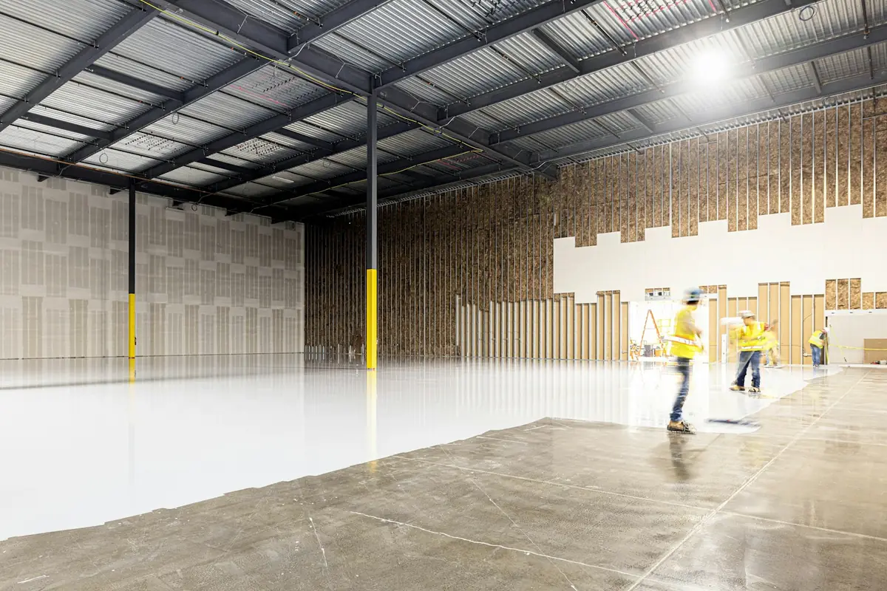

From home garages to warehouse floors, every project starts with diamond grinding and crack repair so the coating bonds for the long haul.
Call (972) 640-6524 for a Free EstimateTell us about your floor and we'll call you back the same working day.
Prefer to talk? Call (972) 640-6524

Garage floor epoxy fixes the dusty, stained concrete that most garages end up with. We grind the slab, repair cracks, broadcast a full layer of vinyl flakes and seal it with a clear topcoat. It's built for homeowners who park daily, work on cars or use the garage as a gym. Left bare, the slab keeps soaking up oil and shedding dust into the house.
Call us today for garage floor epoxy in Irving.
Polyaspartic coatings solve two problems: long downtime and yellowing in the sun. They cure in hours and stay clear under UV, which makes them ideal for west-facing garages, patios and pool decks. Homeowners who can't give up the garage for a week benefit most. A standard epoxy topcoat in a sunny spot will amber and chalk over time.
Call us today for polyaspartic floor coating in Irving.
Metallic epoxy turns a plain slab into a seamless, marbled floor with real depth. It's a fit for living spaces, offices, salons and showrooms where the floor is part of the look. It covers patched or stained concrete that polishing can't hide. Without it, those slabs usually end up under carpet or tile that needs replacing later.
Call us today for metallic epoxy flooring in Irving.
Commercial epoxy flooring protects warehouses, auto shops, kitchens and retail spaces from wear, chemicals and spills. Systems range from high-build epoxy with safety striping to urethane cement for kitchens. Business owners who need a cleanable, inspection-ready floor are the main users. Bare commercial concrete keeps dusting and breaking down under traffic.
Call us today for commercial epoxy flooring in Irving.
Concrete crack and joint repair is part of every coating we install, and it's also available on its own. Irving's expansive clay soil makes slabs move as it swells and shrinks, which opens hairline cracks and settles joints. Anyone with a cracking garage or shop slab should have it sealed before it widens. Ignored cracks let in water and grit and show through any future coating.
Call us today for concrete crack repair in Irving.
Call Irving Epoxy Flooring and we'll recommend a system after we see the space. The estimate is free.